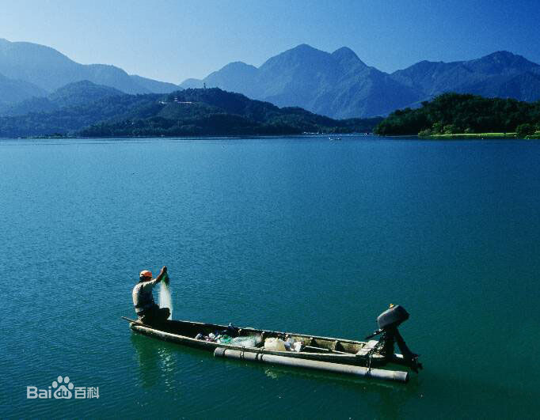

日月潭
Home
Great Wall
ChangJiang
GuiLin
HuangShan
LiJiang
Sun Moon Lake
XiHu

日月潭
位于台湾省阿里山以北、能高山之南的南投县鱼池乡水社村，旧称水沙连、龙湖、水社大湖、珠潭、双潭，亦名水里社。
日月潭湖面海拔748米，常态面积为7.93㎞²（满水位时10㎞²），最大水深27米，湖周长约37千米，是台湾外来种生物最多的淡水湖泊之一。它以光华岛为界，北半湖形状如圆日，南半湖形状如弯月。
2009年，日月潭入选世界纪录协会“台湾最大的天然淡水湖”，在清朝时即被选为台湾八大景之一，有“海外别一洞天”之称。